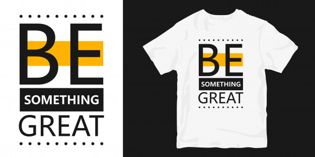

Get creative and design your own T-shirt
We used to have to spend a lot of time searching for the product we wanted. The process involved visiting shops after shops, looking through stock, and finally making the purchase. It took patience because shop-hopping was a crucial part of this endeavor. This changed dramatically when online shopping became possible. Online shopping saved buyers the inconvenience of visiting brick and mortar shops in order to find the product they were looking for. The internet was the revolution in shopping, and buyers became the ultimate winners.
Online shopping was a breakthrough in a way. T Shirt It was extremely beneficial to all those who didn't have the time or disliked the idea of going to crowded markets. The internet made shopping simple and easy. Buyers also enjoyed a host of other benefits, such as saving time and gaining a wealth of information. The many advantages of online shopping meant that buyers wouldn't need any other items, as they already had everything they needed. Unfortunately, buyers proved their inflexibility once again. Buyers' hunger was not quenched by the internet.
The buyers proved to be a problem to trust as they had changing tastes and preferences that sellers found very difficult to accommodate. Buyers today want to create their product and no longer need to be restricted by sellers. They want to be able to participate in every step of the buying process, beyond what they are permitted or allowed for centuries. Buyers desire the freedom and privilege to personalize, customize and design their own products. They're not ready to order their favourite tee-shirt online.
Instead, they want to make their own tee-shirts and use their imagination and creativity. They want every aspect of their t-shirts to express their creativity. They will add any design element that suits their needs, such as colour, shape, art and text. In order to impress others, they want the world to see their understanding of design and art. They know that online shopping isn't the best option for them so they are going to make their own t-shirts.

In a sense, buyers today have changed a lot. They want more than what sellers can offer. They don't want to be limited to browsing the products online and selecting the one that they like. Instead, they want their tee-shirts to have their personal touch. This is why they stopped visiting sites that do not offer designing features. This shift in buyers' preferences has caused a huge drop in online sales and revenue. Today, sellers have no choice but to let buyers dictate their terms and give in to their wishes.
We can see that sellers have had to make some changes in their business practices. Because of this, Vestit Planet they are ready to incorporate any tool or any custom-made t-shirt designing software that caters to buyers' changing tastes. Online shops do not want the benefits to slip by them. If they didn't integrate a design tool, then buyers would stop coming to them. This could lead to a significant loss of business. This is how designing your own product, or your own tee shirt has changed the way people shop for products.